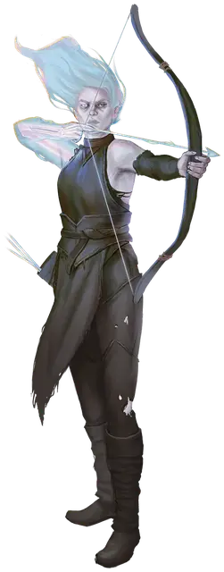

Возрождённый
Reborn

Смотрите статью: Происхождения [Lineages]
Смерть — не всегда конец. Возрождённые являются доказательством этого: когда-то погибшие, они каким-то образом продолжают жить. У некоторых возрождённых есть шрамы от смертельных ран, их серая плоть или бескровные вены несут на себе прикосновение смерти. Другие возрождённые представляют собой чудеса науки или магии, сшитые из различных существ или обладающие загадочным разумом в искусственных телах. Независимо от происхождения, возрождённые познают новую жизнь и ищут собственный путь и ответы.
Потускневшие воспоминания
Возрождённые страдают от некоторого рода разрыва, прерывания их жизни или физического состояния, с которым их разум не в состоянии справиться. Их воспоминания о событиях, предшествовавших прерыванию, часто расплывчаты или отсутствуют. Иногда самые неожиданные события могут вызвать ощущения или видения прошлого.
Вместо того чтобы спать, возрождённые сидят и размышляют о прошлом, надеясь на какое-то откровение о том, что было раньше. Чаще всего это тёмные, безмолвные минуты. Но иногда, в момент покоя, стресса или волнения, у возрождённого случается проблеск о том, что было раньше. Когда вы захотите получить такое видение, совершите бросок по таблице «Потерянные воспоминания», чтобы узнать подробности.
Потерянные воспоминания
| к6 | Воспоминание |
| 1 | Вы вспоминаете яркое проявление физической боли. С какой отметкой или шрамом на вашем теле он связан? |
| 2 | Воспоминание заставляет вас плакать. Это горькое или радостное воспоминание? Вы чувствуете тоже самое, когда это вспомнили? |
| 3 | В вашей памяти проносятся картины детства. Вы вспоминаете какое-то событие или себя прежнего? |
| 4 | Воспоминание приносит с собой голос когда-то близкого вам человека. Что он вам советует? |
| 5 | Вы вспоминаете, как вам нравилось то, что вы не можете делать сейчас. Что это? Почему сейчас вам это не нравится? |
| 6 | Воспоминание несёт в себе яркий запах или ощущение. Вы собираетесь попытаться воссоздать этот опыт? |
Происхождение возрождённого
Возрождённые могут появиться в обстоятельствах, схожих с обстоятельствами возникновения различной нежити или конструктов. В таблице «Происхождения возрождённого» приведены идеи того, как ваш персонаж стал возрождённым.
Происхождение возрождённого
| к8 | Происхождение |
| 1 | Вы были воскрешены при помощи магии, но что-то пошло не так. |
| 2 | Швы скрепили неподходящие друг к другу части вашего тела, и ваши воспоминания относятся к нескольким разным жизням. |
| 3 | Выкарабкавшись из могилы, вы поняли, что не помните ничего, кроме единственного имени. |
| 4 | Вы были нежитью в услужении некроманта в течение многих лет. Однажды ваше сознание вернулось. |
| 5 | Вы очнулись в заброшенной лаборатории среди множества деталей для механических устройств. |
| 6 | Вы были освобождены от окаменения спустя несколько поколений. Однако ваши воспоминания потускнели, и тело уже не то, что было раньше. |
| 7 | Ваше тело одержимо духом, который делится своими воспоминаниями и замещает ваши отсутствующие конечности призрачными протезами. |
| 8 | На публике вы ведете себя как ничем не примечательный человек, но вы чувствуете, как внутри чешется соломенная набивка. |
Возрождённый в Доменах Ужаса
При создании возрождённого обсудите со своим Мастером, имеет ли смысл, чтобы ваш персонаж был связан с одним из следующих Доменов Ужаса (подробно описанных в главе 3):
Хар’Акир. Вы умерли и прошли через погребальные обряды этого пустынного царства, но, каким-то образом, душа — ваша или чужая — нашла приют в прекрасно сохранившихся останках.
Ламордия. Вы проснулись посреди странных экспериментов аморальных ученных. Они считают вас своим лучшим творением или у них есть задание, которое вы должны выполнить.
Мордент. Вы вышли из таинственного устройства, известного как Аппарат, ваше тело — безжизненная оболочка, а ваше прошлое — загадка.
Особенности возрождённого
Вы обладаете следующими расовыми особенностями:
Увеличение характеристик. Либо значение одной характеристики по вашему выбору увеличивается на 2, а другой — на 1, либо значение трёх различных характеристик по вашему выбору увеличивается на 1.
Вид существа. Вы Гуманоид.
Размер. Ваш размер — Маленький или Средний. Вы сами решаете, какого размера будете, когда получаете это происхождение.
Скорость. Ваша базовая скорость ходьбы составляет 30 футов.
Наследие предков. Если вы замените расу этим наследием, вы можете сохранить следующие элементы прежней расы: любые навыки и любые скорости лазания, полёта или плавания, которые вы получили от неё.
Если вы не оставите ни одну из этих особенностей или выберете это наследие при создании персонажа, вы получаете владение двумя навыками по вашему выбору.
Бессмертная природа. Вы избежали смерти, и этот факт даёт вам следующие преимущества:
- Вы совершаете с преимуществом спасброски от болезней и отравления, и у вас есть сопротивление урону ядом.
- Вы совершаете спасброски от смерти с преимуществом.
- Вам не нужно есть, пить или дышать.
- Вам не нужно спать, и магия не может усыпить вас. Вы можете закончить продолжительный отдых за 4 часа, если проведёте это время в неактивном, неподвижном состоянии, в течение которого вы сохраняете сознание.
Знания из прошлой жизни. Вы временно вспоминаете отрывки из прошлого. Возможно, это потускневшие воспоминания давних времён или прошлой жизни. Когда вы совершаете проверку характеристики с использованием навыка, вы можете бросить к6 сразу после того, как увидите число на к20, и добавить результат броска к6 к результату проверки. Вы можете использовать это умение количество раз, равное вашему бонусу мастерства. Вы восстанавливаете все потраченные использования после окончания продолжительного отдыха.
Языки. Ваш персонаж может говорить, читать и писать на Общем и ещё одном языке, который по вашему мнению подходит для персонажа.